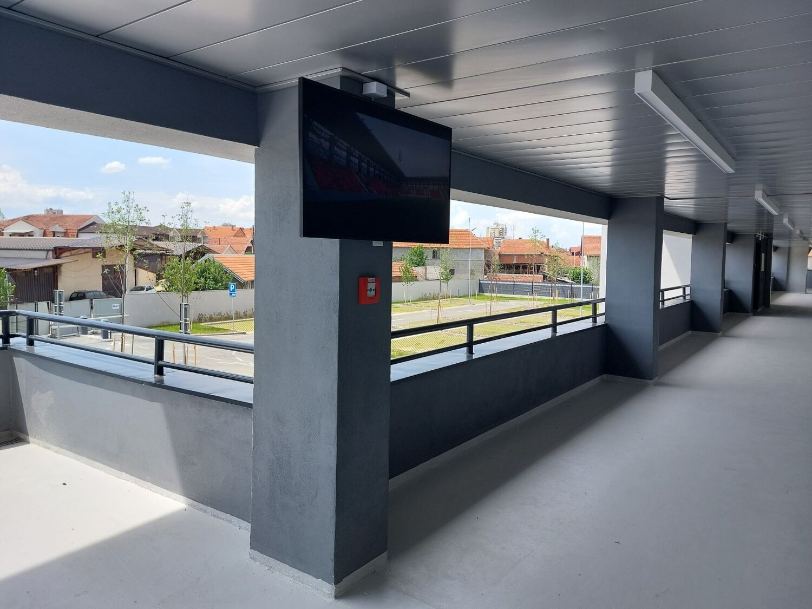
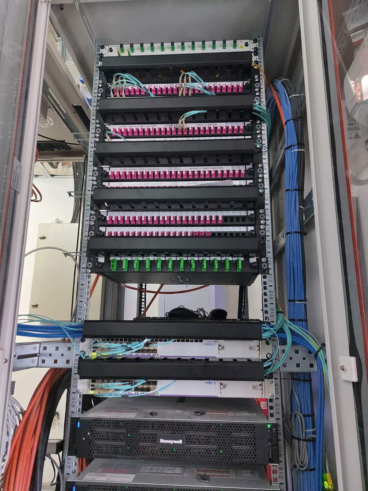
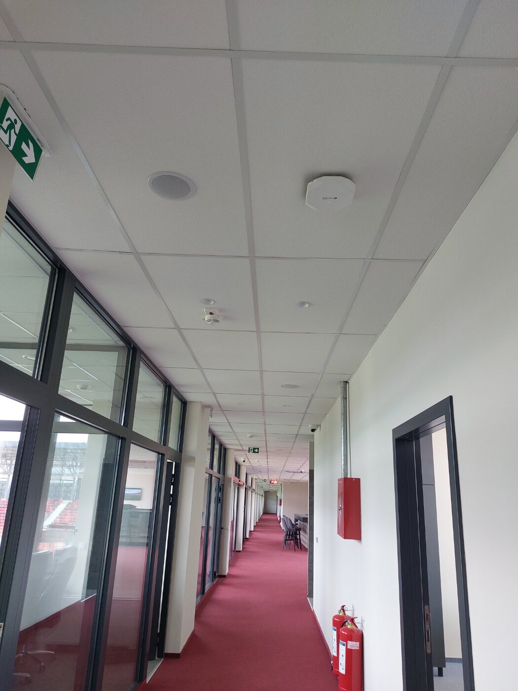

Active network equipment
Core and access network infrastructure for stable system connectivity and data distribution throughout the venue.

A single, reliable telecommunications infrastructure connecting the stadium's operational, security and multimedia systems, with modern Wi-Fi 6 coverage throughout the venue.

A modern stadium relies on a large number of interconnected technology systems. The network infrastructure had to provide a stable foundation for video surveillance, digital signage, operational services and the daily work of staff.
The solution was designed as a single, scalable platform, with active network equipment and Wi-Fi 6 access points providing reliable communication and coverage across the stadium's different zones.
The network was designed as a shared foundation for connecting users, devices and the stadium's key systems.
Core and access network infrastructure for stable system connectivity and data distribution throughout the venue.
Modern wireless infrastructure adapted to the stadium's different functional zones and user requirements.
A shared network foundation for CCTV, digital signage and the venue's other operational and technical systems.
Active network equipment, access points and connected systems were implemented as a single technology whole.



The implemented solution provides centralised, clear and scalable network infrastructure, ready to support the stadium's daily operations, the connection of technical systems and future expansion of the venue.